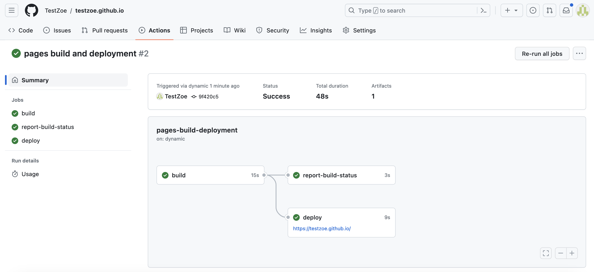
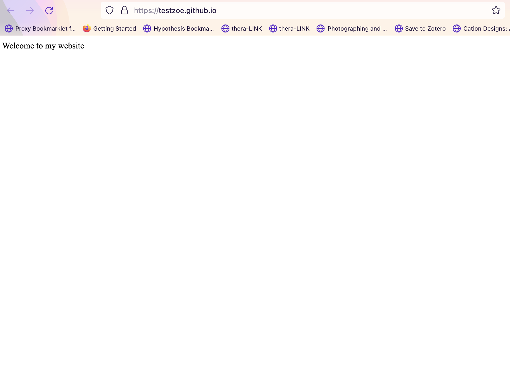

Introduction to The Web & Servers
⚡️ This lesson draws from some of the fantastic materials from Ashley Blewer’s Halt and Catch Fire Syllabus, which is a project designed around a fantastic television show that ran from 2014-2017 exploring the history of computing in the 1980s and 1990s. I would highly recommend the show to those interested in the topic, and even if you are not, I would highly recommend taking a look at the syllabus, which you can find here https://bits.ashleyblewer.com/halt-and-catch-fire-syllabus/. In particular, this lesson draws from week 11 https://bits.ashleyblewer.com/halt-and-catch-fire-syllabus/classes/11.html
In our last lesson, we learned how to create a webpage using HTML. But what is a webpage? How does it work? And how do we access it? These are the questions we will be exploring in this lesson.
What is the Web?
We all use the web constantly, but what exactly is it?
Turning to our reliable source of information, Wikipedia, we find the following definition:
“The World Wide Web (WWW), commonly known as the Web, is an information system where documents and other web resources are identified by Uniform Resource Locators (URLs, such as https://www.example.com/), which may be interlinked by hypertext, and are accessible over the Internet.[1][2] The resources of the WWW are transferred via the Hypertext Transfer Protocol (HTTP) and may be accessed by users by a software application called a web browser and are published by a software application called a web server.”
While this is technically a definition, there’s a lot to unpack here.
It is also helpful to return a bit to our HTML lesson and dive into the history of these web technologies. The core idea of Hypertext and the web is the idea of making it possible to link information across machines. One of the origins for this idea comes from Vannevar Bush’s Memex that we talked about previously, which envisioned using microfilm to store and link information. While there are some earlier antecedents to this idea, it started to really take off in the 1950s and 60s.
One famous example is Project Xanadu, which was developed by Ted Nelson in the 1960s and 1970s. Nelson’s idea was to create a system where you could link any piece of information to any other piece of information.1 This idea was very influential, but it was never fully realized. You can read more about it here https://en.wikipedia.org/wiki/Project_Xanadu.

Other important figures include Douglas Engelbart, who developed the first computer mouse and the first hypertext system. However, it was really Tim Berners-Lee, who developed the World Wide Web in the 1980s and 1990s that we have to thank for the web as we know it today.
In his vision of the web, Tim Berners-Lee imagined a space where all information stored on computers could be interconnected. To achieve this, he developed key components:
- the Universal Resource Identifier (URI) to identify any object on the web,
- the HyperText Transfer Protocol (HTTP) for transferring hypertext,
- and Hypertext Markup Language (HTML) as a universal language for creating web pages.
Berners-Lee saw the URI as the web’s most fundamental innovation because it enables hypertext links to direct browsers to specific resources. HTML serves as the “fabric” or “connective tissue” of the web, with hypertext links at its core, allowing seamless connections between different web resources. For more on this history, I highly recommend Helmond, Anne. “A Historiography of the Hyperlink: Periodizing the Web through the Changing Role of the Hyperlink.” In The SAGE Handbook of Web History, by Niels Brügger and Ian Milligan, 227–41 2019.

This diagram is of Tim Berners-Lee’s initial vision for the web, and you can actually explore it via an emulator https://worldwideweb.cern.ch/browser/, which allows you to “party like it’s 1989” and see the first web browser in action. The project is hosted by CERN, the European Organization for Nuclear Research, where Berners-Lee worked when he developed the web. You can read more about the history of the web here https://worldwideweb.cern.ch/.

For those interested in a more detailed history of the internet and modern computing, there is also this timeline from the Computer History Museum, covering developments from the 1960s to the 1990s https://www.computerhistory.org/internethistory/ that is helpful.
What are Uniform Resource Locators (or URL)?
So now that we have a sense of the history of the web, let’s dive into the core concept of the web, the Uniform Resource Locator (URL). A URL is another term for a URI or a web address, which Berners-Lee envisioned as way to locate anything on the web. It is a string of characters that provides a way to access a specific resource on the web. URLs are made up of different components, which you can see in this diagram:

This diagram is from the Mozilla Web Docs, which provide a great overview of the topic https://developer.mozilla.org/en-US/docs/Learn_web_development/Howto/Web_mechanics/What_is_a_URL. You’ve already encountered URLs when we created an a tag in our HTML page.
<a href="https://ischool.illinois.edu/">My first page!</a>This is a type of Hyperlink or Link that allows us to link to other webpages. In our case, we created something called an external link because we linked to a webpage that is not part of our website. But you can also create internal links that link to other pages on your website, or anchors that link to specific parts of a webpage (this is how the sidebar to navigate this page functions). You can read more about hyperlinks here https://developer.mozilla.org/en-US/docs/Learn_web_development/Howto/Web_mechanics/What_are_hyperlinks.
But URLs are more than just links; they are the way we access webpages. Mozilla describes URLs as akin to postal addresses, an analogy I find helpful. Just as you need an address to send a letter, you need a URL to send a request to a webpage. Before delving into the anatomy of URLs, understanding domain names and the web’s functionality is beneficial.
While we often talk about the cloud, the concept of the web was originally based on the idea of a web of interconnected computers.

While this is a simplified explanation, essentially each computer operates as both a client and a server. A client is a computer that requests data from a server, and a server is a computer that provides data to a client in response.

Although our current internet is vastly more complex, this core idea of a client requesting data and a server hosting and sending data remains central to how the web functions.
Much of the data sent from servers to clients consists of HTML documents, but it can also include images, videos, audio, or virtually any type of data.
So, besides understanding that we have clients and servers, the other core concept is understanding how these computers communicate with each other, using something called the Hypertext Transfer Protocol (HTTP).
What is HTTP?
Tim Berners-Lee developed the Hypertext Transfer Protocol (HTTP) as a way to transmit data across the world wide web. You’ll notice that almost every URL starts with http:// or https://. This indicates the the protocol used by the client and server use to communicate with each other.
I particularly like Julia Evans’ Zine on HTTP for explaining this concept:

This might seem technical, but the core idea is that when we enter a URL for a webpage (like google.com) into a web browser (like Chrome), we’re actually sending an HTTP request to a server that hosts the HTML files and data. If the server validates our request (with a 200 OK status), it grants access to the webpage.
There’s a number of different types of status codes, that you can see here:

But the most important are either 200 which means the request was successful, or 404 which means the request was not successful.

So, if you’ve ever seen an error message when you go to a webpage saying the page doesn’t exist or 404 Not Found, that means that you received a 404 error, which is a type of status code you get back from an HTTP request when the server could not find the requested resource.
Now we can look more closely at the components of URL, through the Mozilla example here https://developer.mozilla.org/en-US/docs/Learn/Common_questions/Web_mechanics/What_is_a_URL#scheme.
So first we have the scheme or protocol, which tells the browser how to communicate with the server:

It’s important to note that websites, web browsers, and search engines are all software applications that utilize the HTTP protocol to communicate with web servers, but they differ in function:
- a website is a collection of web pages and related content that is identified by a common domain name and published on at least one web server, like our course website. A website might have internal and external links on it as well.
- a web browser is a software application that is used to access websites and view web pages, like Google Chrome or Firefox or Safari. So while you can open any HTML document in a web browser, you can also use a web browser to access websites that are hosted from other servers.
- a search engine is a web service like Google or DuckDuckGo that allows users to search for content on the web, usually accessed from a web browser. These search engines often crawl websites via URLs to index the content of the web.
So now that we have some terminology, we can look at some of the rest of the URL.
What is a Domain Name?
Next we have the authority or domain name, which is the name of the server that hosts the website:

Originally, when you used the internet you would access other websites using something called an IP address, which is a series of numbers that identifies a particular computer on the internet. You can see an example of an IP address here:

For example, the 1995 classic, thriller movie The Net starring Sandra Bullock as a systems analyst who “must use her computer skills to uncover the truth and clear her name.” In the movie, she searches using IP addresses which you can watch a clip of here: https://youtu.be/M1K-B8QVLyo?t=242.
IP Addresses are still used today, but they are not very human readable or user friendly (though we will be seeing some in action today), so instead, we use domain names. Domain names are part of the Domain Name System (DNS) which is often described as a “phone book” or “address book” that translates IP addresses of servers into easier to understand domains.
Here’s an example of a domain name:

In this explanation from Mozilla https://developer.mozilla.org/en-US/docs/Learn/Common_questions/Web_mechanics/What_is_a_domain_name, they outline that there are two general main components to a domain name:
- the top-level domain (TLD), which is the last part or suffix of the domain name, like
.comor.orgor.edu. These are registered and managed by a central organization called ICANN (Internet Corporation for Assigned Names and Numbers). As you can imagine, there’s a long history and fraught politics around TLDs, since they are often tied to nation states (for example,.ukor.ca). Notably, while there is.usfor the United States, most US websites use.comor.govif they are government-related. If you’re curious to learn more I would recommend this blog post on dead-TLDs https://astrid.tech/2022/04/05/1/dead-tlds/ and checking out the rich literature on Internet Governance with books like Milton Mueller’s Networks and States or Laura DeNardis’ The Global War for Internet Governance. - the other part of a domain name is the second-level domain (SLD), which is the part of the domain name that is to the left of the TLD, like
mozillainmozilla.org. These are managed by domain name registrars, like GoDaddy, and are registered by individuals or organizations. One key thing to understand is that you can purchase a domain name through registrars but not in perpetuity. This leads to not only needing to renew your domain names, but also to the rise of domain name speculation, where people purchase domain names in the hopes of selling them for a profit. You can read more about this in this fascinating article by Ingrid Burrington on visiting a Domain-Names Conference https://www.theatlantic.com/technology/archive/2017/02/domain-names-dot-horse/516438/.
So in the case of the Mozilla example, we have a subdomain developer and a second-level domain mozilla and a top-level domain org.
This is all very technical, but we can start to try this out if we attempt to host our HTML pages.
Hosting HTML Pages with GitHub Pages

While we have primarily been using GitHub for its versioning and collaboration features, it also has a feature called GitHub Pages that allows you to host static websites for free. You can read more about how to do this in their documentation https://docs.github.com/en/pages.
How to Host HTML Pages with GitHub Pages
GitHub Pages allows you to host static websites for free directly from a GitHub repository. This is perfect for portfolios, project sites, and learning how web hosting works. The key advantage is that you don’t need to pay for hosting or configure a server—GitHub handles all of that automatically.
You have two main options for hosting:
Option 1: Personal Website (github.io)
A personal github.io site is great for building a portfolio that you can use on your resume or to showcase your work.
Step 1: Create a repository with the special name
Create a new repository on GitHub with the exact name: yourusername.github.io
For example, if your GitHub username is ZoeLeBlanc, you would create a repository called ZoeLeBlanc.github.io. This special naming convention tells GitHub that this repository should be hosted as your personal website.

Make sure: - The repository is Public (required for GitHub Pages to work) - You can add a README.md if you’d like (optional)
Step 2: Add your HTML files
Clone the repository to your computer and add your index.html file (and any other HTML, CSS, or JavaScript files you want).
The index.html file is important—it’s the file that GitHub serves when someone visits your site. So yourusername.github.io/ automatically displays your index.html.

Step 3: Push to GitHub
Use the standard git workflow:
git add .
git commit -m "Initial commit: add digital object page"
git push origin mainOnce you push, GitHub automatically detects the change and starts hosting your site. No configuration needed!
Step 4: Find your live site
Your website is now live at: https://yourusername.github.io
You can verify the deployment by going to your repository and clicking the Actions tab. You should see green checkmarks indicating successful deployment.

Option 2: Group/Organization Website
If your group wants to create a collaborative showcase, you can enable GitHub Pages on your group’s repository in the CultureAsData-UIUC organization.
Step 1: Choose your repository
Use your existing group repository (the one assigned to your group in the course).
Step 2: Add your HTML files
Create a folder for your digital object (e.g., member-name-object/) and add your index.html file there. You might also create an index.html at the root of the repository that links to all group members’ pages.
Example structure:
is310-spring-2026-group-*/digital-objects/
├── index.html (main showcase page with links to members)
├── member1-name/
│ └── index.html
├── member2-name/
│ └── index.html
└── member3-name/
└── index.htmlStep 3: Enable GitHub Pages
In your repository, go to Settings → Pages: - Under “Source,” select the branch you want to deploy (usually main) - Click Save
GitHub will now host your site.
Step 4: Find your live site
Your group’s website will be hosted at: https://cultureasdata-uiuc.github.io/is310-spring-2026-group-*/digital-objects
You can check deployment status in the Actions tab, just like with the personal github.io option.
Monitoring Your Deployment
Whether you choose Option 1 or Option 2, you can always check your deployment status:
- Go to your repository on GitHub
- Click the Actions tab
- Look for the most recent workflow run
A green checkmark ✓ means your site deployed successfully. A red ✗ means there was an error (check the logs for details).
You should see live deployment confirmation:

Example of a deployed personal site: https://testzoe.github.io/
Understanding What’s Happening
When you push your HTML files to GitHub, here’s what happens behind the scenes:
- GitHub detects the push to your repository
- GitHub Pages automatically builds your site (copying your HTML, CSS, and JavaScript files to a web server)
- Your site becomes accessible at your unique URL
- When someone visits your URL, their browser sends an HTTP request to GitHub’s servers
- GitHub’s servers respond with your HTML file
- The browser renders the page
This is the complete web ecosystem in action—you’ve created content (HTML), version controlled it (Git), and deployed it to a live web server!
Assignment: Doing It Live
Now that you understand how the web works and how GitHub Pages works, it’s time to deploy your own website! You’ll take the HTML page you created in the Source & Style Assignment and host it online.
Choose Your Hosting Option
Option A: Personal Portfolio Site
Have you ever wanted to make a personal portfolio? Then now is your opportunity! If you choose this option, you should do the following:
- Create your own
yourusername.github.iorepository - Host your digital object page at your personal site
- You can add to this portfolio throughout your career
- Follow the Option 1 steps above
Once your site is deployed, your personal page should include:
Option B: Group Collaborative Showcase
Already have a personal github.io or don’t want to make a webpage from scratch? Then you can select this option!
- Use your group’s repository in the
CultureAsData-UIUCorganization - Create a dedicated folder for your digital object page
- You can optionally create a main showcase page linking all group members’ work
- Follow the Option 2 steps above
Once your site is deployed, your digital object page should include:
For either option, the HTML structure should include elements from your Source & Style assignment:
Submission
Once your site is live:
- Test it by visiting your URL in a browser
- Check the Actions tab to confirm successful deployment
- Post the link to your live site in the GitHub Discussion thread https://github.com/CultureAsData-UIUC/is310-spring-2026/discussions/4
Footnotes
Interestingly, the Product Management/Note Taking app Notion has a great interview with Nelson for those that are interested in his work https://www.notion.so/blog/ted-nelson.↩︎